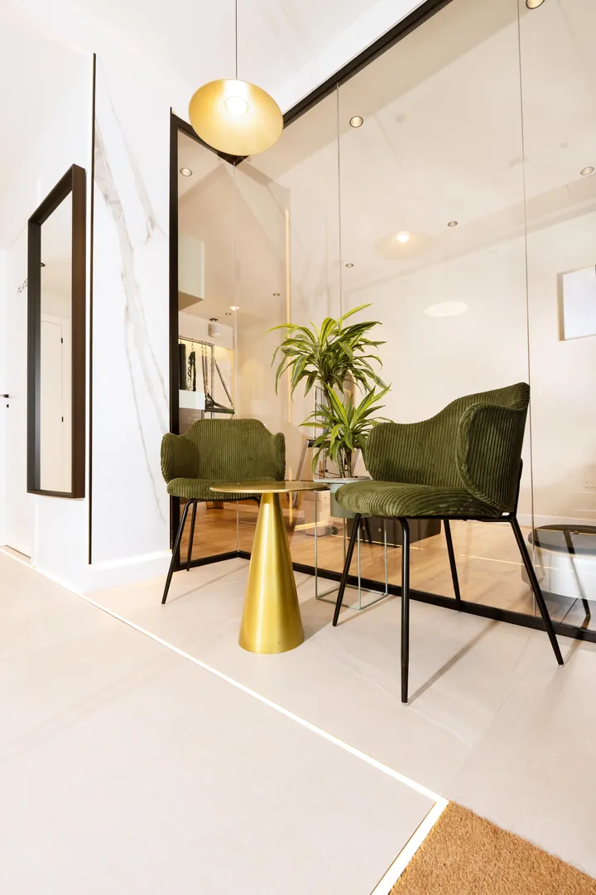

01
FASE 01 · PUNTO DE PARTIDA
Escuchar
La historia completa, no solo el síntoma inmediato.
Empezamos por escuchar tu historia, tu dolor y tus objetivos, sin prisa. El dolor que experimentas rara vez empieza donde se manifiesta; a menudo es la última señal de una cadena de sobrecargas previas, posturas mantenidas, estrés o lesiones pasadas mal consolidadas.
Entorno: Consulta y Bienvenida · Sitges
Entrevista clínica
Sin reloj acelerado
Contexto vital
Rutinas, trabajo y deporte
Objetivo
Poner nombre y rumbo
